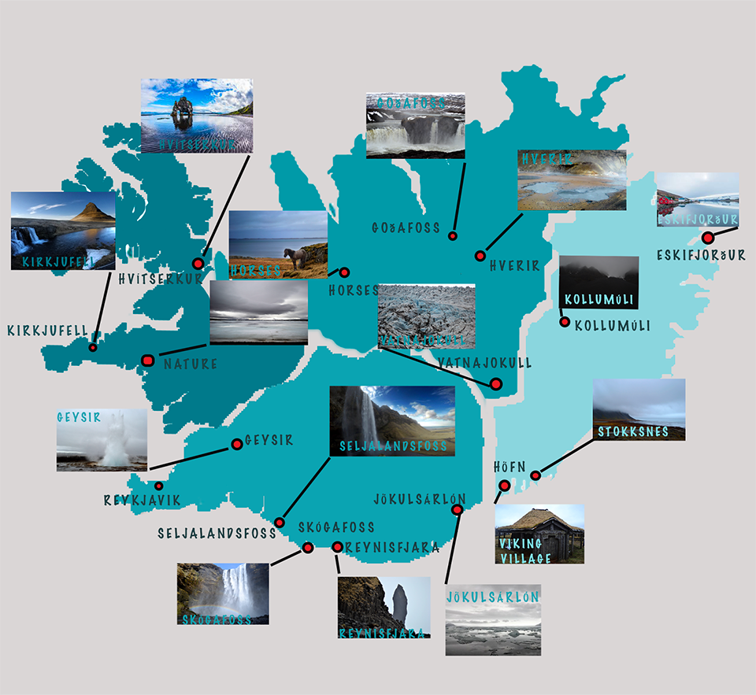
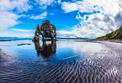

MAP
WEST
Kirkjufell

"MT. KIRKJUFELL (463 m) is the most prominent mountain in Grundarfjörður and a landmark of the fishing town. The name Kirkjufell means Church Mountain as it is considered to resemble a church. For the past few years, Mt. Kirkjufell and Kirkjufellsfoss waterfall have become the most popular place for a photo." (Mt. Kirkjufell & Kirkjufellsfoss in Grundarfjörður - the ..., 2021). You will see crowds of visitors with tripods and cameras taking photos like the one above as "was one of the filming locations for Game of Thrones season 6 and 7". (Kirkjufell, 2021) "If you want to climb it ask to the Saga Centre (around £35 for a guide). Two spots involving a rope climb make it dangerous to scale when wet or without local knowledge. (Lonely Planet,2015)
Hvítserkur
HVíTSERKUR, a 15 meter's high monolith or sea-stack, an eroded volcanic dyke. The name Hvítserkur literally means:"hvít-" = white and "-serkur" = a long shirt, the white comes from the color of the guano deposited on its rocks, as several species of birds live on top of Hvítserkur. The legend goes that Hvítserkur is a petrified troll. The troll lived in Strandir in the Wesfjords and wanted to tear down the bells at Þingeyraklaustur convent. The Icelandic trolls are not Christian and don't like the sound or sight of churches or church-bells. But, the troll got caught by the first rays of the sun and then turn into stone by daylight. (The majestic Hvítserkur Sea Stack - the Troll of North-We..., 2021)
Nature

Shaped by the forces of nature, the, barren landscapes demonstrate the creativity powers of the four basic elements—earth, air, fire, and water—in a dramatic way. Active volcanoes, bright green valleys, glacier-cut fjords, black sand beaches, and roaring rivers are the most distinctive features of the Icelandic landscape. And although they are very accessible, they still remain untouched by human civilization.(Nature & Environment, 2021)